The Information Age is witnessing the birth of the biggest cultural database with the global community contributing to the internet 24x7. Data flows underneath every digital system in use, acting as the life force of the digital organism. Regardless of the accelerated evolution of the usage of the digital system, the interfaces however still rely on old metaphors and action grammars. This project is an exploration of the emergent properties of data in relation to the database and the interface, the two variances in any digital system.
This follows an investigative study and results in experimentation with the data as art, as information, and as an interface.
The experiments resulted in the exploration of data forms as text, image and audio resulting in a series of digital experiences in the form of art, information and interfaces. The experiences indicate probable usage in the domains of forensic data analysis concerning sonic information, medical tools for assisting people with speech deficiency or ecological acoustics. The following is a glimpse of the underlying design processes.
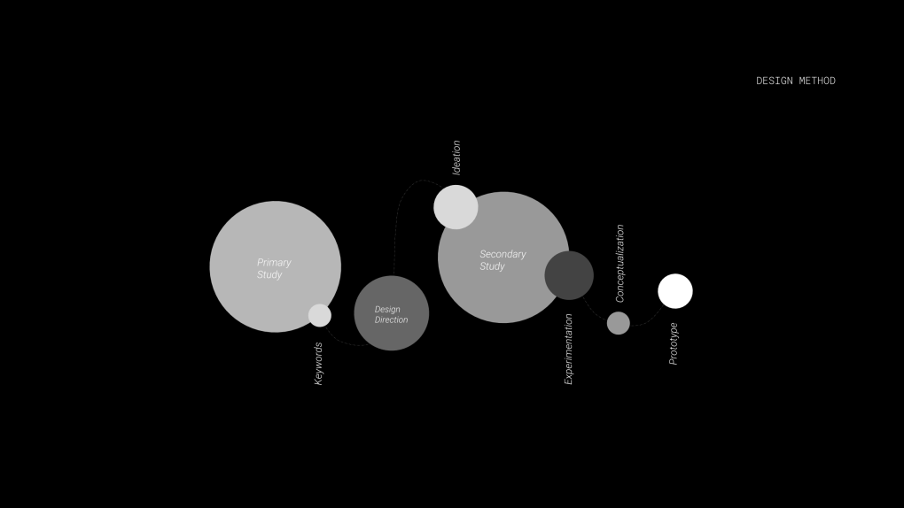
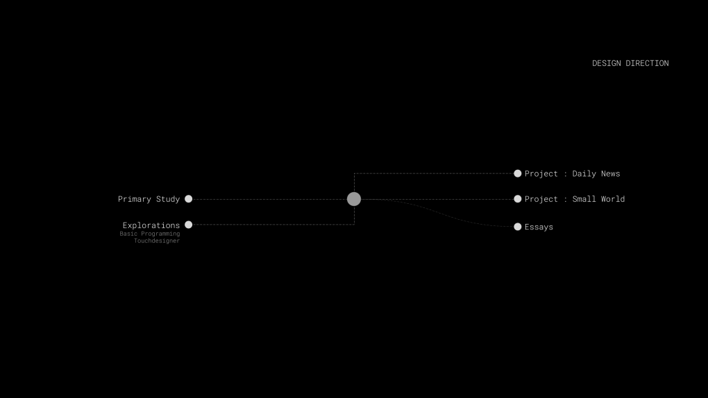
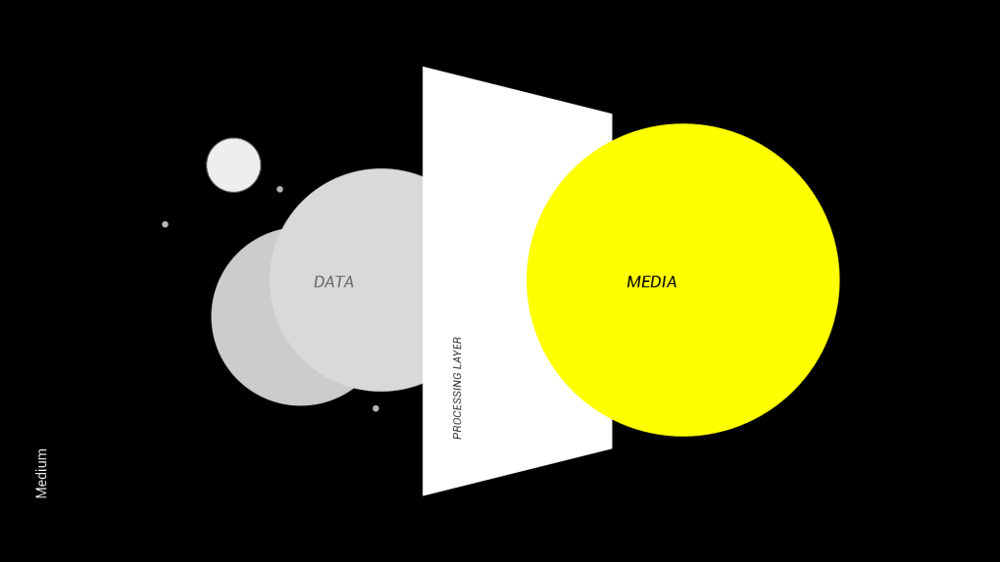
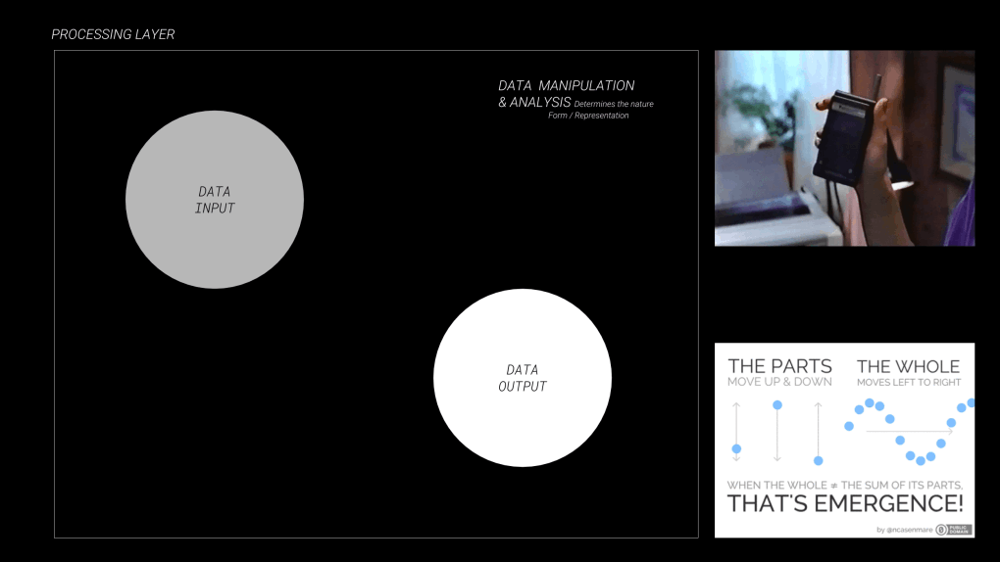
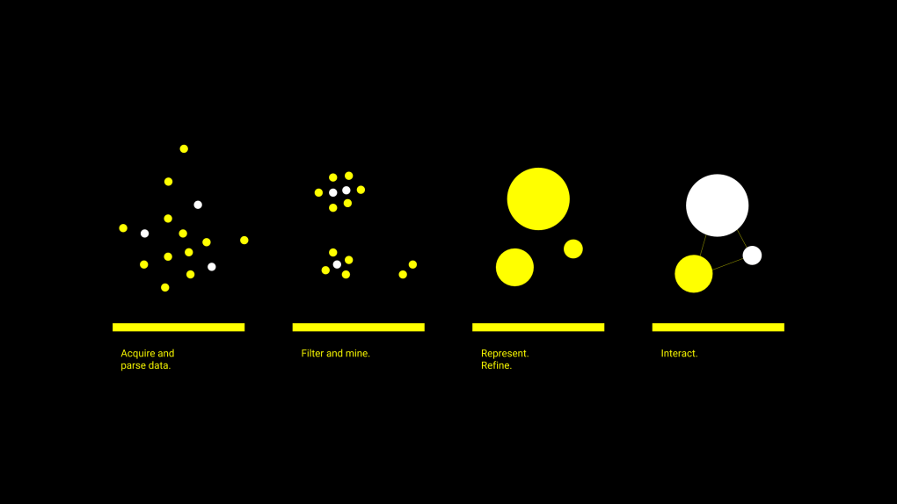
The data parsing layer is important but subject to the final intentions of the objective concerning the data usage. The objective behind the usage is subjective, often being dictated by the agencies in power or to be used as a validation to support/debunk predefined hypothesis. The problem with this approach being the neglection of possible outcomes serves as a driving force for the explorations that follows :
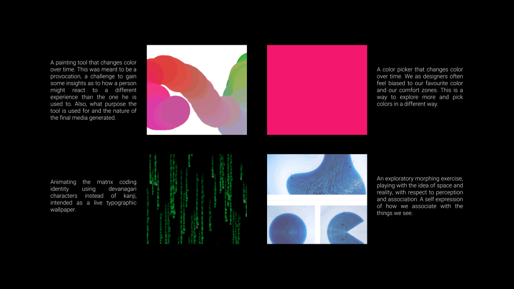
Most of these explorations were done using the processing library of javascript to experiment with the notion of variables subject to polytemporality of any tool, in terms of perception, and its applications. Below lies a concept to analyse multiple 'News' sources in order to generate their political biases and the aggregation of a global news ranking mechanism.
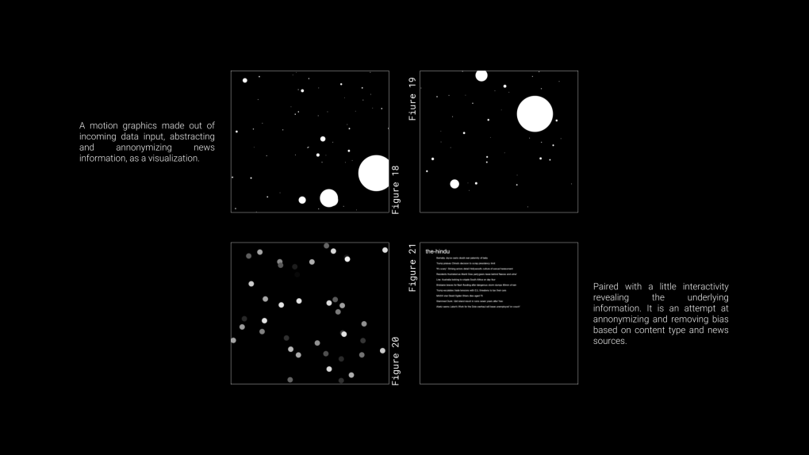
Temporal Life is a chronological mapping excercise aimed at exploring the different scientific leaps of mankind in a relativistic fashion.
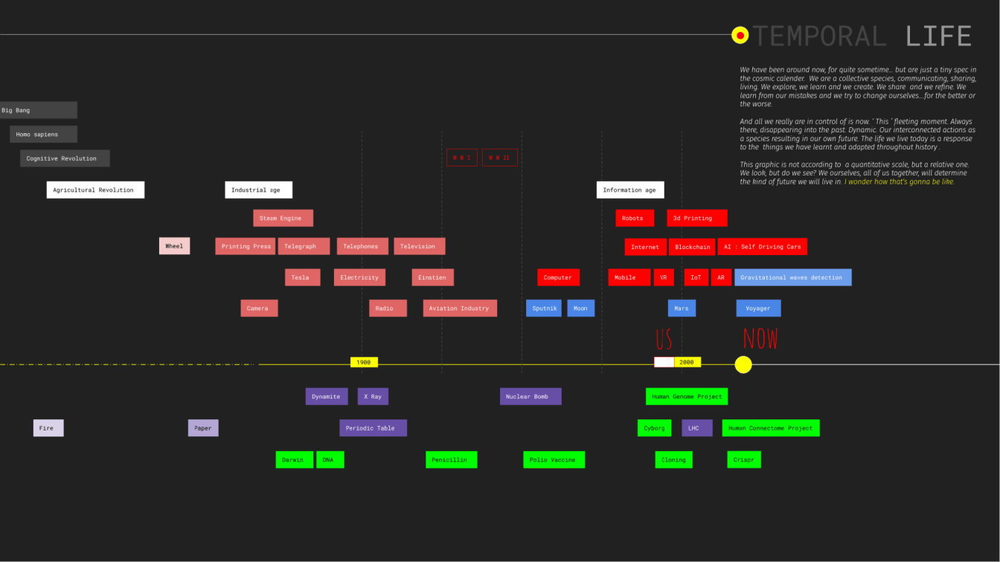
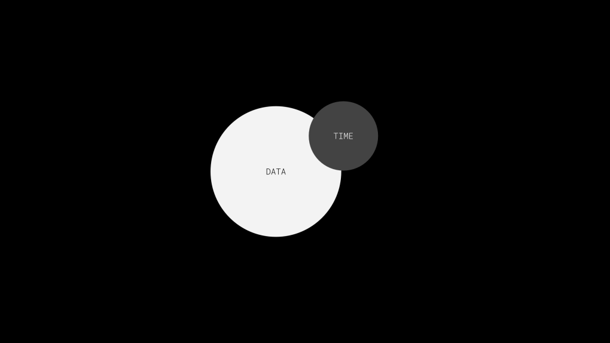
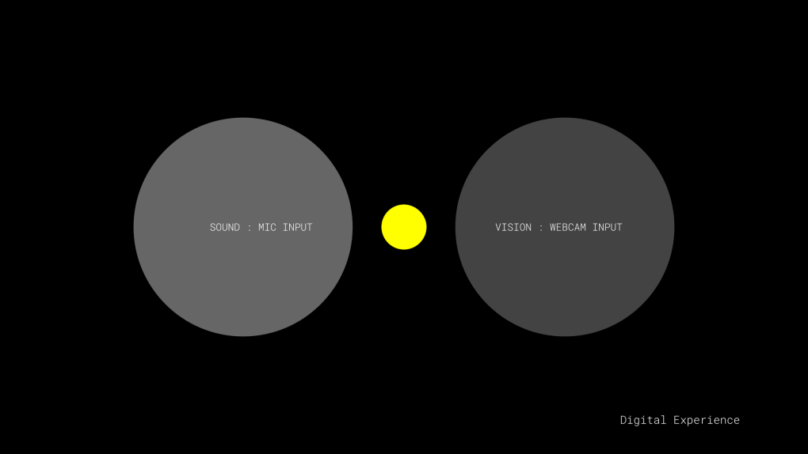
The relationship of data with time is fascinating in the sense of how the temporal interdependencies reveal more information that might otherwise escape cognition. And when we talk about temporalities what matters is the aspect of multiscalarity. For some data reveals its true nature in a matter of minutes, some in days, while some might take a few hundred years or more. What does it tell us about our cognitive systems, biological and synthetic? And how do we design for long term analysis of data for that matter? Below are representatations of tools to record/analyse visual information over a period of a few minutes. On the left is a tool to analyse the dynamics of motion. On the right is a poster generation tool for movies that reveal information about their color composition and aspect ration over the length of the movie.
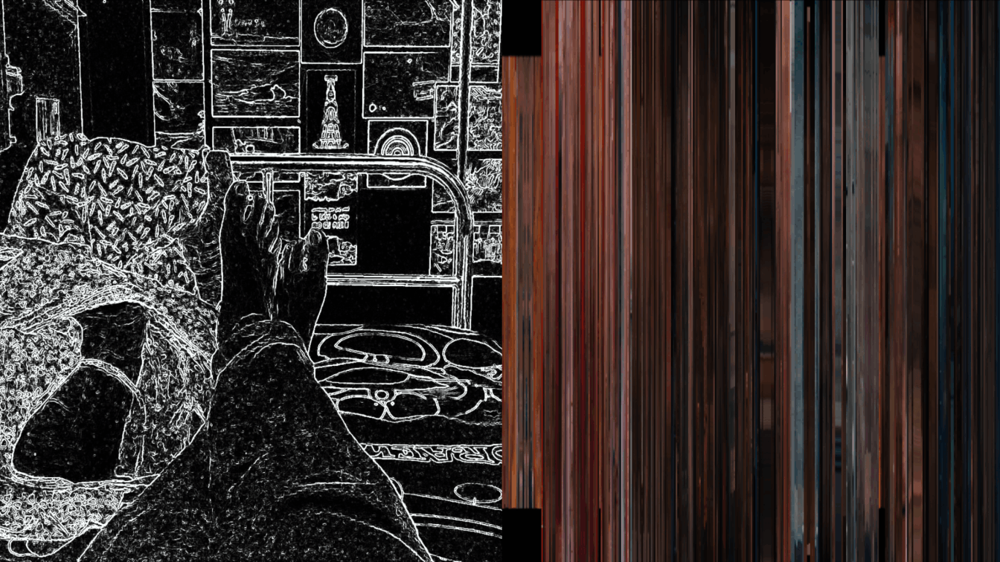
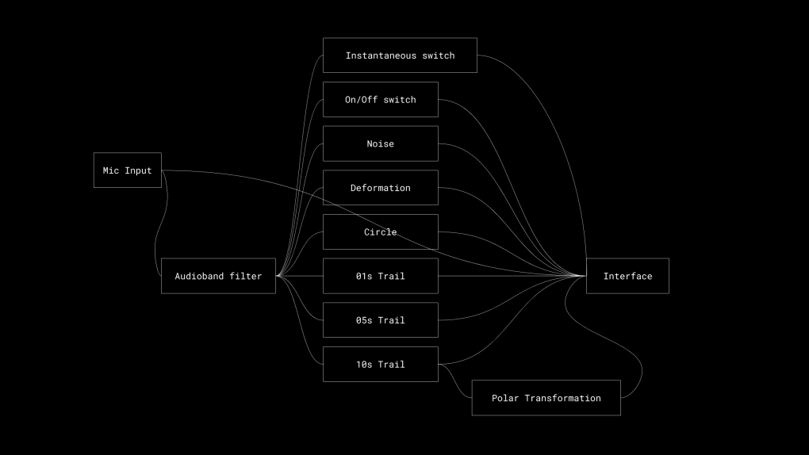
The following experiments are audio reactive tools exploring sound as in audio clips/real time sound as a poster series, analytical interface and a game.
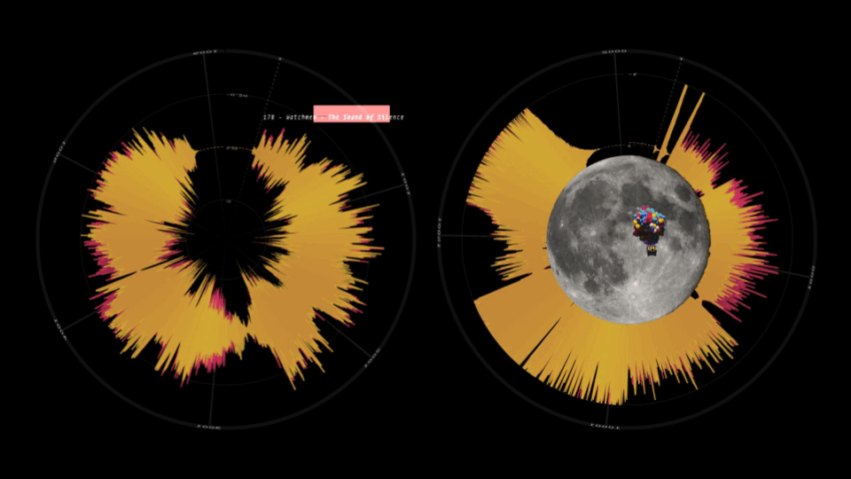
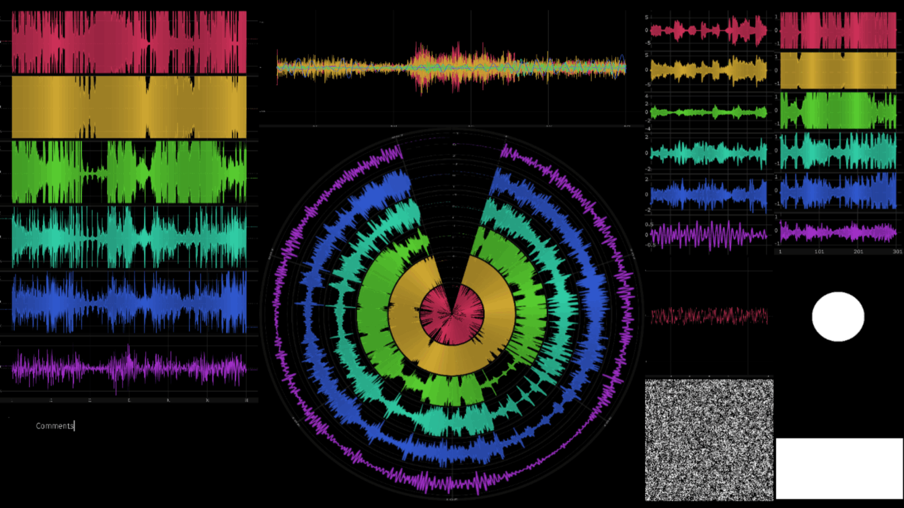